수능(국어영역) (2016-06-02 기출문제)
1. 위 강연을 고려할 때, ㉠에 대한 대답으로 가장 적절한 것은?(1번 공통지문 문제)
- ‘작품 1’은 운전자가 쉽게 읽을 수 있도록 글자를 제작하였으므로 타이포그래피의 언어적 기능에 중점을 둔 것이라 할 수 있어요.
- ‘작품 2’는 글자가 나타내는 의미와 상관없이 글자를 작품의 재료로만 활용하고 있으므로 타이포그래피의 조형적 기능에 중점을 둔 것이라 할 수 있어요.
- ‘작품 3’은 회화적 이미지를 활용하여 글자의 외형적 아름다움을 표현했으므로 타이포그래피의 언어적 기능에 중점을 둔것이라 할 수 있어요.
- ‘작품 1’과 ‘작품 2’는 모두 글자의 색을 화려하게 사용하여 의미를 정확하게 전달하고 있으므로 타이포그래피의 언어적 기능에 중점을 둔 것이라 할 수 있어요.
- ‘작품 2’와 ‘작품 3’은 모두 글자의 외형적 아름다움을 통해 글자의 의미 전달을 돕고 있으므로 타포그래피의 조형적 기능에 중점을 둔 것이라 할 수 있어요.
(정답률: 알수없음)

2. [A], [B]에 대한 설명으로 가장 적절한 것은?(3번 공통지문 문제)
- [A]에서는 특정 방안의 단점을 언급한 후 다른 방안의 장점을 제시하고 있다.
- [A]에서는 특정 방안의 문제점을 해결할 방안을 언급한 후 다른 방안이 지닌 문제점을 말하고 있다.
- [A]에서는 특정 방안의 장점을 인정한 후 다른 방안이 그 장점을 더 발전시킬 수 있음을 언급하고 있다.
- [B]에서는 특정 방안의 한계를 언급한 후 그 방안의 의의를 제시하고 있다.
- [B]에서는 특정 방안의 장단점을 언급한 후 단점을 보완할 수 있는 방법을 제시하고 있다.
(정답률: 알수없음)
3. 위 토의의 흐름으로 볼 때, [C]의 의의를 가장 잘 설명한 것은? [3점](3번 공통지문 문제)
- 토의에서 결정된 사항을 이행하기 위한 세부 계획을 결정하였다.
- 예상되는 문제점의 보완을 전제로 특정 방안을 실행하는 데에 합의하였다.
- 최적화된 결과를 도출하기 위해 제삼의 방안을 절충안으로 결정하였다.
- 소수 의견 존중을 전제로 특정 방안을 유연하게 실행하는 데에 합의하였다.
- 오류 가능성을 줄이기 위해 특정 방안에 대한 전문가의 의견을 구하는 데에 합의하였다.
(정답률: 알수없음)
4. (나)를 고려하여 중간 부분 을 작성하려 할 때 내용을 구체화하기 위한 방안으로 적절하지 않은 것은? [3점](6번 공통지문 문제)
- 경험 : 역사 문화 연구 동아리 활동
내용 구체화 방안 : 동아리 활동으로 우리나라 역사와 문화를 탐구하는 과정에서 얻은 지식을 우리지역의 역사와 문화에도 적용할 수 있는 안목을 갖게 되었음을 서술한다. - 경험 : 역사 문화 연구 동아리 활동
내용 구체화 방안 : 동아리에서 지역 문화재를 탐방하는 활동을 진행하면서 자연스럽게 우리 지역의 향토 문화에 대하여 관심을 갖게 되었음을 서술한다. - 경험 : 보고서 발표 대회 참가
내용 구체화 방안 : 보고서 발표를 준비하면서 기른 설명 능력이 우리 지역의 문화를 쉽게 설명할 수 있는 능력으로 이어질 것임을 서술한다. - 경험 : 복지 센터 보조 교사 활동
내용 구체화 방안 : 복지 센터 보조 교사로서 초등학생을 돌보는 활동을 진행하면서 초등학생과 친밀감을 형성할 수 있는 방법을 터득하게 되었음을 서술한다. - 경험 : 복지 센터 보조 교사 활동
내용 구체화 방안 : 보조 교사 활동을 학업과 병행하면서 겪었던 어려움을 호소함으로써 문화 해설 도우미 활동에서 겪을 수 있는 어려움을 충분히 극복할 수 있음을 서술한다.
(정답률: 알수없음)
5. <보기>는 글쓰기 과정에서 학생이 떠올린 생각이다. 이에 따라 작성했을 <부제>로 가장 적절한 것은?(8번 공통지문 문제)
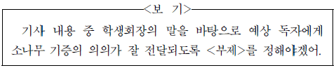
- 우리 학교 소나무들로 조성된 미리내 솔숲, 드디어 이번 주 토요일에 개방
- 지역 사회에 쉼터 제공, 소나무 기증이 우리 학교 학생들에게 나눔과 협력의 정신 일깨워
- 미리내 솔숲, 공공 녹지 조성과 나무 생태 보전이라는 시민 공원의 설립 취지 잘 살려
- 우리 학교의 역사적 상징물, 지역 주민들에게 나무 기증의 중요성 알리는 계기로 작용
- 지역 사회와의 협력의 산물, 우리 학교의 역사적 상징물이 지역 사회의 상징물이 되기까지
(정답률: 알수없음)
6. 기사 초고의 ⓐ～ⓔ에 대한 점검 결과와 수정 방안으로 적절 하지 않은 것은?(8번 공통지문 문제)
- 점검 결과 : ⓐ: 행위의 시간 표현이 잘못 되었다.
수정 방안 : ‘참석할 예정이다’로 수정 한다. - 점검 결과 : ⓑ: 의미상 불필요한 표현이다.
수정 방안 : 의미 중복을 피하기 위해 삭제한다. - 점검 결과 : ⓒ: 문장에서 행위의 주체가 드러나 있지 않다.
수정 방안 : ‘시민 공원은’을 주어로 추가한다. - 점검 결과 : ⓓ: 부사의 사용이 부적절하다.
수정 방안 : ‘때마침’으로 수정한다. - 점검 결과 : ⓔ: 피동 표현이 불필요하게 중복되고 있다.
수정 방안 : ‘해결되었다는’으로 수정한다.
(정답률: 알수없음)
7. 위 탐구 활동과 자료에 따라, 현대 국어 용언들의 15세기 중엽 이전과 17세기 초엽에서의 활용형을 바르게 추정한 것은?(11번 공통지문 문제)
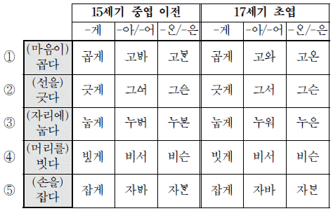
- ①
- ②
- ③
- ④
- ⑤
(정답률: 알수없음)
8. <보기>의 ㉠～㉣에 대한 설명으로 적절하지 않은 것은? [3점]
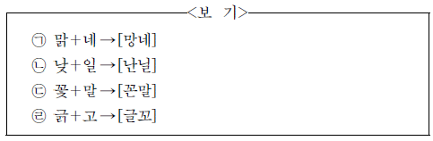
- ㉠ : ‘값＋도 → [갑또]’에서처럼 음절 끝에 둘 이상의 자음이 오지 못하기 때문에 일어난 음운 변동이 있다.
- ㉠, ㉢: ‘입＋니→[임니]’에서처럼 인접하는 자음과 조음 방법이 같아진 음운 변동이 있다.
- ㉡ : ‘물＋약 → [물략]’에서처럼 자음이 교체된 음운 변동이 있다.
- ㉡, ㉢ : ‘팥＋죽 → [팓쭉]’에서처럼 음절 끝에 올 수 있는 자음이 제한되어 있기 때문에 일어난 음운 변동이 있다.
- ㉣ : ‘잃＋지 → [일치]’에서처럼 자음이 축약된 음운 변동이 있다.
(정답률: 알수없음)
9. <보기>의 ㉠～㉢에 해당하는 예로 적절하지 않은 것은?
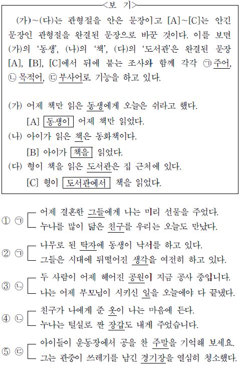
- ①
- ②
- ③
- ④
- ⑤
(정답률: 알수없음)
10. <보기>의 ㉠에 해당하는 예로 적절한 것은?
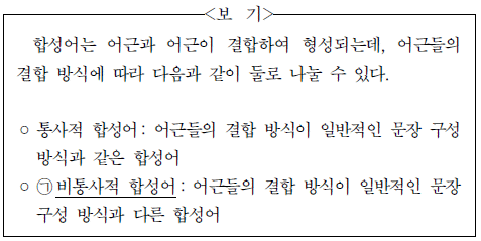
- 아이들이 뛰노는 소리가 밖에서 들렸다.
- 서로 몰라볼 정도로 세월이 많이 흘렀다.
- 저마다의 타고난 소질을 계발하는 것이 중요하다.
- 지난달부터 공부를 열심히 했더니 자신감이 생겼다.
- 망치질을 자주 하다 보니 손바닥에 굳은살이 박였다.
(정답률: 알수없음)
11. 윗글에 대한 이해로 적절하지 않은 것은?(16번 공통지문 문제)
- 퍼셉트론의 출력 단자는 하나이다.
- 출력층의 출력값이 정답에 해당하는 값과 같으면 오차 값은 0이다.
- 입력층 퍼셉트론에서 출력된 신호는 다음 계층 퍼셉트론의 입력값이 된다.
- 퍼셉트론은 인간의 신경 조직의 기본 단위의 기능을 수학적으로 모델링한 것이다.
- 가중치의 갱신은 입력층의 입력 단자에서 출력층의 출력 단자 방향으로 진행된다.
(정답률: 알수없음)
12. 윗글을 바탕으로 ㉠에 대해 추론한 것으로 적절하지 않은 것은?(16번 공통지문 문제)
- 학습 데이터를 만들 때는 색깔이나 형태가 다른 사과의 사진을 선택하는 것이 좋겠군.
- 학습 데이터에 두 가지 범주가 제시되었으므로 입력층의 퍼셉트론은 두 개의 입력 단자를 사용하겠군.
- 색깔에 해당하는 범주와 형태에 해당하는 범주를 분리하여 각각 서로 다른 학습 데이터로 만들어야 하겠군.
- 가중치가 더 이상 변하지 않는 단계에 이르면 ‘사과’인지 아닌지를 구별하는 학습 단계가 끝났다고 볼 수 있겠군.
- 학습 데이터를 만들 때 사과 사진의 정답에 해당하는 값을 0으로 설정하였다면, 출력층의 출력 단자에서 0 신호가 출력 되면 ‘사과이다’로, 1 신호가 출력되면 ‘사과가 아니다’로 해석 해야 되겠군.
(정답률: 알수없음)
13. 윗글을 바탕으로 <보기>를 이해한 내용으로 가장 적절한 것은? [3점](16번 공통지문 문제)
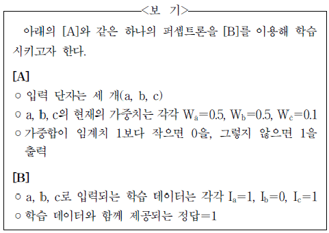
- [B]로 학습시키기 위해서는 판정 단계를 먼저 거쳐야 하겠군.
- 이 퍼셉트론이 1을 출력한다면, 가중합이 1보다 작았기 때문이겠군.
- [B]로 한 번 학습시키고 나면 가중치 Wa , Wb , Wc가 모두 늘어나 있겠군.
- [B]로 여러 차례 반복해서 학습시키면 퍼셉트론의 출력값은 0에 수렴하겠군.
- [B]의 학습 데이터를 한 번 입력했을 때 그에 대한 퍼셉트론의 출력값은 1이겠군.
(정답률: 알수없음)
14. 윗글을 바탕으로 추론한 내용으로 가장 적절한 것은?(20번 공통지문 문제)
- 유비 논증의 개연성은 이미 알고 있는 정보와 관련이 없는 새로운 대상이 추가될 때 높아진다.
- 인간은 자신이 고통을 느낀다는 것이나 동물이 고통을 느낀다는 것이나 모두 유비 논증에 의해 안다.
- 인간이 꼬리가 있는 실험동물과 차이가 있다는 사실은 동물 실험의 유효성을 주장하는 논증의 개연성을 낮춘다.
- 동물 실험이 인간에게 중대한 이익을 가져다준다는 것은 동물 실험의 유효성과 상관없이 알 수 있는 정보이다.
- 동물 실험에 윤리적 문제가 있다는 주장에는 인간과 동물의 고통을 공평한 기준으로 대해야 한다는 생각이 전제되어 있다.
(정답률: 알수없음)
15. ㉠과 ㉡에 대한 설명으로 가장 적절한 것은?(20번 공통지문 문제)
- ㉠과 ㉡은 모두 인간과 동물이 기능적으로 유사하면 인과적 메커니즘도 유사하다고 생각한다.
- ㉠이 ㉡의 비판에 적절히 대응하기 위해서는 인간과 동물이 기능적으로 유사하지 않다는 것을 보여 주면 된다.
- ㉡은 ㉠이 인간과 동물 사이의 기능적 차원의 유사성과 인과적 메커니즘의 차이점 중 전자에만 주목한다고 비판한다.
- ㉡은 ㉠과 달리 인간과 동물이 유사하지 않으면 동물 실험 결과는 인간에게 적용할 수 없다고 생각한다.
- ㉡은 ㉠과 달리 인간이 고통을 느끼는 것과 동물이 고통을 느끼는 것은 기능적으로 유사하지 않다고 생각한다.
(정답률: 알수없음)
16. <보기>는 유비 논증의 하나이다. 유비 논증에 대한 윗글의 설명을 참고할 때, ⓐ～ⓒ에 해당하는 것을 ㉮～㉱ 중에서 골라 알맞게 짝지은 것은? (순서대로 ⓐ, ⓑ, ⓒ) [3점](20번 공통지문 문제)
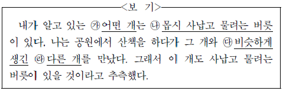
- ㉮, ㉯, ㉱
- ㉮, ㉰, ㉯
- ㉱, ㉮, ㉰
- ㉱, ㉯, ㉰
- ㉱, ㉰, ㉯
(정답률: 알수없음)
17. 문맥상 ㉢과 바꿔 쓰기에 적절하지 않은 것은?(20번 공통지문 문제)
- 맡기는
- 가하는
- 주는
- 안기는
- 겪게 하는
(정답률: 알수없음)
18. ㉠～㉢을 바탕으로 (나)와 (다)를 설명한 내용으로 가장 적절한 것은?(25번 공통지문 문제)
- (나)의 ‘아으 동동다리’는 ㉠의 예로 볼 수 없다.
- (나)의 <서사>에서 ‘아으 동동다리’를 제외한 나머지 부분은 ㉠의 예로 볼 수 있으나, ㉢의 예로는 볼 수 없다.
- (나)의 <서사>에서 ‘아으 동동다리’를 제외한 나머지 부분은 ㉡의 예로 볼 수 있다.
- (다)의 ‘위 증즐가
 ’는 ㉡의 예로 볼 수 있으나, ㉢의 예로는 볼 수 없다.
’는 ㉡의 예로 볼 수 있으나, ㉢의 예로는 볼 수 없다. - (다)의 제1연에서 ‘위 증즐가
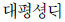
’를 제외한 나머지 부분은 ㉡의 예로 볼 수 있다.
(정답률: 알수없음)
19. (가)를 참고하여 [A], (나), (다)를 감상한 것으로 적절하지 않은 것은? [3점](25번 공통지문 문제)
- [A]에서는 자연과 인간 간의 조화로움이, (나)의 <정월령>에서는 남녀 간의 사랑으로 인한 외로움이 드러나 있군.
- [A]의 ‘물수리 한 쌍’과 (나)의 ‘만춘 욋곶’은 생활 속에서 민중이 긍정적 가치를 부여하는 대상을 의미하는 것으로 볼 수 있군.
- [A]에서는 화락의 상황을, (다)에서는 이별의 상황을 보여 주고 있군.
- [A]에서는 제1행과 제2행이, (다)에서는 제1연과 제2연이 대상의 변화에 따른 대칭 구조를 이루고 있군.
- [A]에서는 풍속을 교화할 만한 이상적인 사랑을, (나)에서는 모두가 우러러볼 만한 ‘덕’을, (다)에서는 ‘님’에 대한 사랑의 감정을 읊고 있는 것으로 볼 수 있군.
(정답률: 알수없음)
20. 네모친 “음악적 요소” 에 대한 이해로 적절하지 않은 것은?(28번 공통지문 문제)
- 리듬은 음높이를 가지는 규칙적인 소리의 흐름으로, 음악에서 질서를 가진 음표나 쉼표의 진행에 활용되는 요소이다.
- 가락은 서로 다른 음높이가 지속 시간을 가지는 음들의 흐름으로, 음악에서 자주 반복되거나 변형되면서 등장하는 소재로 활용되는 요소이다.
- 화성은 화음과 또 다른 화음이 연결된 흐름으로, 음악에서 긴장과 이완을 유발하는 진행에 활용되는 요소이다.
- 셈여림은 소리의 세기로, 음악에서 크고 작은 소리가 나타나도록 하는 데 활용되는 요소이다.
- 음색은 식별 가능한 소리의 특색으로, 음악에서 바이올린, 플루트 등 서로 다른 종류의 악기를 선택하는 데 활용되는 요소이다.
(정답률: 알수없음)
21. 음악 작품을 만들기 위한 계획들 중, ⓐ의 입장을 가장 잘반영한 것은?(28번 공통지문 문제)
- 장3도로 기쁨을, 단3도로 슬픔을 나타내는 정서적인 음악을 만든다.
- 플루트의 청아한 가락으로 상쾌한 아침의 정경을 연상시키는 음악을 만든다.
- 낮은 음고의 음들을 여러 번 사용하여 내면의 불안감을 조성하는 음악을 만든다.
- 첫째 음과 둘째 음의 간격이 완전5도가 되는 음들을 조직적으로 연결하여 주제가 명확한 음악을 만든다.
- 오페라의 남자 주인공이 화들짝 놀라는 장면에 들어갈 매우 강한 시끄러운음이 울리는 음악을 만든다.
(정답률: 알수없음)
22. 윗글의 <그림>에 대한 이해로 적절한 것은?(28번 공통지문 문제)
- <그림>은 심벌즈의 소리 스펙트럼이다.
- <그림>에 표현된 복합음의 진동수는 550 Hz로 인식된다.
- <그림>에 표현된 소리의 부분음 중 기본음의 세기가 가장 크다.
- <그림>은 시간의 경과에 따른 부분음의 세기의 변화를 나타낸다.
- <그림>에서 220 Hz에 해당하는 막대가 사라져도 음색은 변하지 않는다.
(정답률: 알수없음)
23. [A]를 바탕으로 <보기>에 대해 설명한 것으로 적절하지 않은 것은? [3점](28번 공통지문 문제)
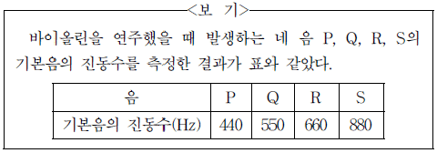
- P와 Q 사이의 음정은 장3도이다.
- P와 Q 사이의 음정은 Q와 R 사이의 음정보다 좁다.
- P와 R 사이의 음정은 협화 음정이라고 할 수 있다.
- P와 S의 부분음 중에는 진동수가 서로 같은 것이 있다.
- P와 S 사이의 음정은 Q와 R 사이의 음정보다 협화도가 크다.
(정답률: 알수없음)
24. <보기>를 바탕으로 할 때, ㉠과 쓰임이 유사한 것은?(28번 공통지문 문제)
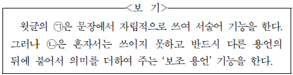
- 그 일을 다 해 버리니 속이 시원하다.
- 그는 친구들의 고민을 잘 들어 주었다.
- 내일 경기를 위해 잘 먹고 잘 쉬어 둬라.
- 그는 내일까지 돈을 구해 오겠다고 큰소리를 쳤다.
- 일을 추진하기 전에 득실을 꼼꼼히 계산해 보고 시작하자.
(정답률: 알수없음)
25. (가), (나)에 대한 감상으로 적절하지 않은 것은? [3점](34번 공통지문 문제)
- (가)는 산이 ‘누거만년’ 동안 ‘침묵’하고 있는 것을 ‘지리함즉하’다고 말함으로써 화자가 마주한 현실이 지향하는 세계와 거리가 있음을 보여 주는 것이겠군.
- (가)의 ‘내 기다려도 좋으랴’와 관련하여 볼 때 ‘화염’이 치밀어 오르는 것은 화자가 기대하는 산의 변화를 나타내는 것이겠군.
- (나)에서 ‘만난다면’, ‘좋아하지 않으랴’라고 말하는 화자는 자신이 소망하는 만남이 앞으로 실현되기를 바라는 태도를 취하고 있는 것이겠군.
- (가)의 ‘내 마음’이 ‘둥둥 구름을 타’는 것은 ‘큰 산’, ‘그 넘엇산’을 바꾸려는 화자의 바람이 이루어지는 과정을, (나)의 ‘키 큰 나무와 함께 서서’는 화자가 현실에서 벗어나 자연과 하나가 되고 싶은 마음을 표현한 것이겠군.
- (가)의 ‘핏내를 잊은 ～ 즐거이 뛰는 날’은 평화로운 세계를, (나)의 ‘넓고 깨끗한 하늘’은 화자가 ‘그대’와 만나 진정한 합일을 이루려는 세계를 표현한 것으로 볼 수 있겠군.
(정답률: 알수없음)
26. ㉠과 ㉡에 대한 설명으로 가장 적절한 것은?(34번 공통지문 문제)
- ㉠은 물의 결핍감을, ㉡은 불의 충족감을 비유한다.
- ㉠은 비의 부정적 의미를, ㉡은 소리의 긍정적 의미를 함축한다.
- ㉠은 비에 대한 불안감을, ㉡은 소리에 대한 불안감을 반영한다.
- ㉠은 물의 생동하는 힘을, ㉡은 불이 소멸하는 상황을 형상화한다.
- ㉠은 상승하는 물의 움직임을, ㉡은 하강하는 불의 움직임을 구체화한다.
(정답률: 알수없음)
27. (다)에 드러나는 글쓴이의 태도로 가장 적절한 것은?(34번 공통지문 문제)
- 글쓴이는 ‘온 세상’이 ‘깊은 고요’ 속에 파묻혀 가는 듯한 모습을 보며 스스로에게 연민을 느끼고 있다.
- 글쓴이는 ‘눈이 쌓이는 깊은 밤’에 ‘서재’에 앉아 ‘철학가’의 경지에 미치지 못하는 자신을 성찰하고 있다.
- 글쓴이는 자아를 재발견하는 계기가 된다는 점에서 ‘눈이 쌓이는 밤’에 체험하는 ‘고독’을 긍정적으로 인식하고 있다.
- 글쓴이는 ‘눈이 소리 없이 쌓이는 밤’에 ‘사무적인 일이나 공부’와 같은 일상적인 일들에 새롭게 가치를 부여하고 있다.
- 글쓴이는 ‘옛 이야기를 나누는 삶의 따뜻함’을 떠올리면서 유대감이 ‘단절’된 ‘이웃’과의 관계가 회복되기를 바라고 있다.
(정답률: 알수없음)
28. (다)를 바탕으로 <보기>에 제시된 선생님의 안내에 따라 학습 활동을 수행한 결과로 가장 적절한 것은?(34번 공통지문 문제)
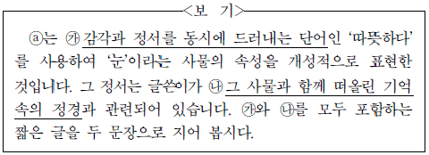
- 현재는 없다. 기나긴 과거와 끝없는 미래만 있을 뿐이다.
- 우리는 둘이 아니다. 너와 나는 한길을 걷는 영원한 벗이다.
- 시간은 모순이다. 힘겨운 시간은 천천히, 즐거운 시간은 빨리 지나간다.
- 지식은 차갑다. 지혜의 따뜻함이야말로 인간의 마음에 생기를 북돋아 준다.
- 자갈밭은 포근하다. 자갈밭에서 어머니가 예쁜 자갈들을 내손에 쥐어 주시던 모습에서 포근함을 느낀다.
(정답률: 알수없음)
29. 윗글의 맥락을 고려할 때, ⓐ의 의미로 가장 적절한 것은?(39번 공통지문 문제)
- 아들에게 말을 돌려서 하려는 것이다.
- 아들의 말에 놀라움을 표시하려는 것이다.
- 아들과 자신의 의견을 같게 하려는 것이다.
- 아들에게 하고자 했던 말을 참으려는 것이다.
- 아들이 말하고자 하는 것을 못 하게 하려는 것이다.
(정답률: 알수없음)
30. [A], [B]에서 각각 드러나는 부자간의 갈등에 대한 이해로 적절하지 않은 것은?(39번 공통지문 문제)
- [B]와 달리 [A]에서는 아버지가 아들의 치부를 들추어내며 책망한다.
- [A]와 달리 [B]에서는 아들이 아버지를 동정한다.
- [A]와 달리 [B]에서는 아버지가 자신의 잘못을 아들의 탓으로 돌린다.
- [A]와 [B] 모두에서 아버지는 아들의 간섭을 못마땅해한다.
- [A]와 [B] 모두에서 아들은 자신과 생각이 다른 아버지의 행위를 문제 삼는다.
(정답률: 알수없음)
31. <보기>를 바탕으로 ㉠과 ㉡을 설명한 내용으로 가장 적절한 것은? [3점](39번 공통지문 문제)
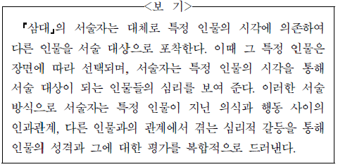
- ㉠에서는 서술자가 선택한 특정 인물이 영감에서 아들로 달라지는 반면, ㉡에서는 덕기로 고정되어 있다.
- ㉠에서는 서술 대상인 상훈의 의식과 행동 사이의 인과관계가, ㉡에서는 덕기가 포착한 상훈의 심리적 갈등이 드러난다.
- ㉠에서는 영감의, ㉡에서는 덕기의 시각에서 서술 대상인 상훈을 낮게 평가하며 그와의 심리적인 갈등을 드러내고 있다.
- ㉠에서는 서술 대상인 상훈에 대한 영감의 평가가 달라지는 반면, ㉡에서는 서술 대상인 상훈에 대한 덕기의 평가가 달라지지 않는다.
- ㉠에서는 서술자가 선택한 특정 인물인 영감의 성격이, ㉡에서는 서술자가 선택한 특정 인물인 덕기와 서술 대상인 상훈의 성격이 드러난다.
(정답률: 알수없음)
32. 윗글의 ‘밤’과 ‘아침’에 대한 설명으로 가장 적절한 것은?(43번 공통지문 문제)
- 밤은 주인공이 초월적 존재와 교감하고, 아침은 주인공이 현실적 문제와 대결하는 시간이다.
- 밤은 운명과의 대결을 통해 주인공이 위기에 처하고, 아침은 조력자의 등장으로 그 위기에서 벗어나는 시간이다.
- 밤은 폐쇄적인 공간에서 새로운 계획이 구상되고, 아침은 개방적인 공간에서 그 계획을 실행할지 논의하는 시간이다.
- 밤은 인물의 내면적 갈등이 점진적으로 심화되고, 아침은 그 내면적 갈등이 새로운 인물들 간의 갈등으로 비화되는 시간이다.
- 밤은 주인공이 새로운 상황을 맞이하면서 서사적 긴장이 조성되고, 아침은 극적 장면이 펼쳐지면서 그 긴장이 해소되는 시간이다.
(정답률: 알수없음)
33. <보기>를 참고하여 윗글을 감상한 내용으로 적절하지 않은 것은? [3점](43번 공통지문 문제)
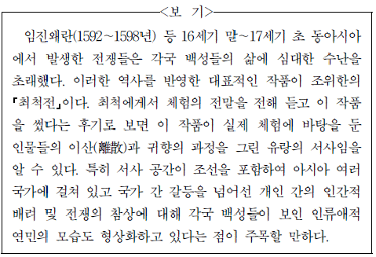
- ‘경자년’, ‘4년’ 등은 최척과 옥영이 겪어야 했던 전란과 유랑 체험이 역사적 실제성을 지닌 것임을 알려 주는군.
- 처절하게 시를 읊고 한숨까지 내쉰 것은 시가 옥영 자신의 이산과 유랑 체험을 계기로 지어진 것임을 알려 주는군.
- ‘조선말’, ‘조선의 곡조’ 등이 사건 전개에 중요한 역할을 하는것은 최척 부부의 재회가 외국에서 이루어지고 있기 때문이겠군.
- 최척 가족의 이산의 사연을 듣고 주변 사람들이 눈물 흘린 것은 전쟁의 참상에 대한 인류애적인 연민을 보여 준 사례이겠군.
- 돈우가 백금을 받고 옥영을 파는 대신 오히려 옥영에게 전별금을 주며 안타까이 보낸 것은 국가 간 갈등을 넘어선 인간적 배려를 보여 주는 사례이겠군.
(정답률: 알수없음)